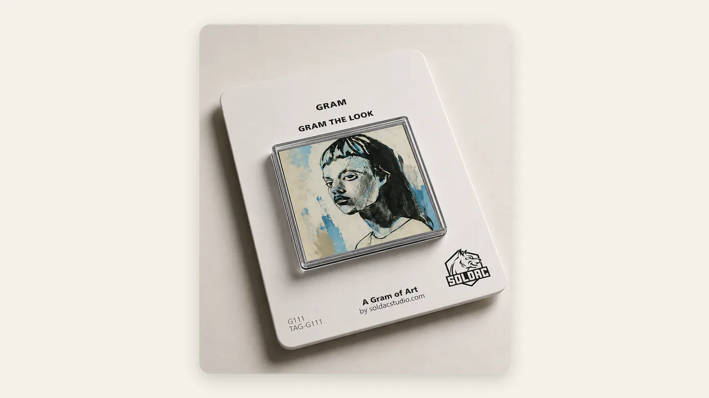

Getting Started
What GRAM is, what happens when you tap, and how claiming works.
What GRAM is
A GRAM is a physical collectible artwork. Tapping it opens its digital page where you can open the live GRAM page, see eligible Studio benefits when available, and claim after delivery.

What happens when you tap
- Tap or scan the GRAM with your phone.
- You may see a short loading screen (the system is opening the correct page).
- You land on the Gram page with the artwork and details.
- If it’s unclaimed, you can claim it (login may be required).
Important:
Use the original GRAM when claiming or using benefits. Screenshots may not be accepted.